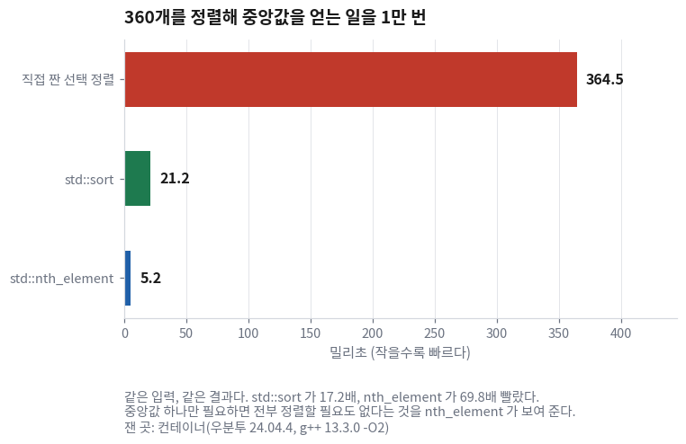
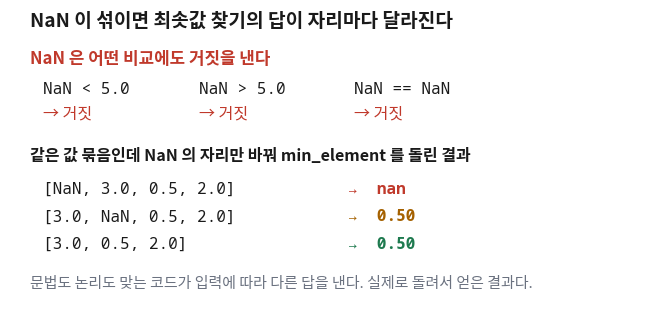

실제 회사의 C++ 코드 1천만 줄을 1년간 추적한 연구가 있다. 거기서 나온 숫자 하나가 이 회차의 출발점이다.
AI가 짠 코드는 표준 라이브러리를 사람의 40%밖에 쓰지 않았다.
대신 직접 짠 for문이 약 2배 많았다.
틀린 코드를 더 많이 만든 것은 아니다 — 정확성 문제는 오히려 사람의 0.94배였다.
문제는 맞지만 둔한 코드다.
오늘은 그 둔한 코드를 알아보고 무엇으로 바꿔 달라고 말할지를 배운다.
함수 이름을 외우는 시간이 아니다. 받은 코드에서
"이건 표준에 이미 있는 것 아닌가" 하고 의심할 줄 아는 것이 목표다.
이름은 그때 AI에게 물어보면 된다.
그리고 마지막에 함정이 하나 있다. 표준 알고리즘으로 바꿔도 실제 라이다에서만 틀리는 코드다.
그 함정이 이 회차에서 가장 중요하다.
한 장 요약 — 학기가 끝나도 이 표만 남으면 된다
무엇을 먼저 볼지: 가운데 「이 for문이 보이면」 열만 읽어도 판단이 선다. 왼쪽 이름은 외우지 않아도 된다.
이걸 쓴다
이 for문이 보이면 바꾼다
수준
std::min_element / max_element
가장 작은(큰) 것을 찾는 루프
[요구]
std::count_if
조건에 맞는 것의 개수를 세는 루프
[요구]
std::copy_if
조건에 맞는 것만 다른 그릇에 담는 루프
[요구]
std::find_if
조건에 맞는 첫 번째를 찾는 루프
[요구]
std::transform
전부 바꿔서 다른 그릇에 담는 루프
[요구]
std::accumulate
합계를 내는 루프
[판단]
std::any_of / all_of
"하나라도 / 전부"를 확인하는 루프
[판단]
std::sort / nth_element
정렬하거나 중앙값을 구하는 루프
[판단]
해석: 외울 것은 함수 이름이 아니라 가운데 열이다.
받은 코드에서 저런 모양의 for문이 보이면 "이건 표준에 이미 있는 것 아닌가"를 의심하면 된다.
이 표에 없는 알고리즘이 훨씬 많다. 다 알 필요도 없고 알 수도 없다.
모양을 알아보는 것이 이 표의 목적이다.
STL은 20년 동안 다른 언어에서 갈고닦은 것이다 (10분 · 건너뛰어도 됩니다)
① 1980년대 — "자료구조와 알고리즘을 떼어 놓을 수 있다"
알렉산더 스테파노프(Alexander Stepanov)는 이상한 생각을 하나 밀고 있었다.
정렬하는 코드가 배열이든 리스트든 상관없이 똑같이 돌아가게 만들 수 있다는 생각이다.
지금은 당연해 보이지만, 당시에는 자료구조마다 알고리즘을 따로 짜는 것이 상식이었다.
배열용 정렬과 리스트용 정렬은 다른 코드였다.
② 그는 언어를 갈아탔다
먼저 에이다(Ada)로 만들어 1987년에 발표했다. 그런데 에이다는 국방 분야 밖으로 퍼지지 않았다.
갈고닦은 생각이 있는데 쓸 사람이 없었다.
그래서 그는 C++로 옮겨 탄다 — 그쪽이 널리 쓰일 것 같아서였다.
기술이 좋아서가 아니라 사람이 많아서 고른 것이다.
③ 여기가 재미있다 — 완성품을 들고 위원회에 갔다
1994년 3월 7일, 그는 C++ 표준화 위원회 앞에 섰다.
들고 간 것은 아이디어가 아니라 20년 가까이 다른 언어에서 다듬어 온 라이브러리 전체였다.
보통 표준은 위원회가 몇 년에 걸쳐 설계한다. 이건 반대였다 —
완성된 물건을 가져와서 "이거 그냥 넣으시죠"라고 한 것이다.
위원회는 그것을 통째로 표준에 넣기로 한다. 그것이 STL(Standard Template Library)이다.
④ 그래서 지금 우리 손에 남은 것
std::min_element 같은 함수는
누가 급하게 만든 편의 함수가 아니라 20년 걸려 설계된 것이다.
⑤ 숫자로 확인한다
"20년 갈고닦은 것"이라는 말은 감흥이 없다. 직접 재 봤다.
360개짜리 라이다 배열을 정렬해 중앙값을 얻는 일을 1만 번 시켰다.
무엇으로
걸린 시간
비
직접 짠 선택 정렬
364.5 ms
1배
std::sort
21.2 ms
17.2배 빠름
std::nth_element
5.2 ms
69.8배 빠름
잰 곳: 컨테이너(우분투 24.04.4, g++ 13.3.0 -O2). 소스는 examples/l13_stl/sort_speed.cpp다.
같은 입력에 같은 결과다. 다른 것은 누가 짰느냐뿐이다.
출처: Alexander Stepanov, Short History of STL (stepanovpapers.com)
출처: Wikipedia — Alexander Stepanov, Standard Template Library
① 가장 가까운 장애물을 찾는 코드 🟡 맡기되 검사
언제 이게 필요해지나
라이다가 준 거리 배열에서 가장 가까운 값을 찾으려고 한다.
앞에 뭔가 있는지 판단하려면 이게 첫 단계다.
터틀봇3 라이다는 한 바퀴에 값 360개를 준다. 1도에 하나씩이다.
AI가 보통 주는 코드 🔴
float min_range = 999.0f;
for (size_t i = 0; i < ranges.size(); i++) {
if (ranges[i] < min_range) {
min_range = ranges[i];
}
}
무엇이 문제인가
이 코드는 컴파일되고, 실행되고, 대체로 맞는 값을 낸다. 그래서 문제를 알아채기 어렵다.
자리
무엇이 걸리나
999.0f
왜 999인가? 근거 없는 값이다. 라이다 최대 거리가 8 m인데 999가 나오면 그건 "못 찾았다"는 뜻인지 "999 m"인지 알 수 없다
i < ranges.size()
인덱스를 직접 다루면 범위 실수가 들어갈 자리가 생긴다. <=로 한 글자만 틀려도 배열 밖을 읽는다
배열이 비었을 때
999가 그대로 남는다. "장애물이 999 m 앞에 있다"는 답이 나간다
루프 전체
읽어 봐야 무슨 일을 하는지 안다. 이름이 없다
이렇게 말하면 된다
최솟값 찾는 for문을 std::min_element로 바꿔 줘. 초깃값을 임의로 두지 말고, 배열이 비었을 때도 안전하게 처리해 줘.
받은 코드
#include <algorithm>
const auto it = std::min_element(ranges.begin(), ranges.end());
if (it == ranges.end()) { return; } // 배열이 비었다
const float min_range = *it;
🆕 이 코드에서 처음 나오는 것
#include <algorithm>
오늘 나오는 함수들이 들어 있는 헤더다.
accumulate만 <numeric>에 따로 들어 있다.
여기서는 min_element를 쓰려고 넣었다.
ranges.begin() / ranges.end()
배열의 첫 칸과 마지막 칸 다음을 가리키는 위치표다.
end()는 마지막 값이 아니라 끝을 지나간 자리라는 것이 중요하다.
여기서는 "이 구간 전체를 봐 달라"고 알려 주는 데 썼다.
std::min_element(first, last)
구간에서 가장 작은 것이 어디 있는지를 돌려준다. 값이 아니라 위치다.
여기서는 그 위치를 it에 받았다.
*it
위치표 앞에 별표를 붙이면 그 자리에 있는 값이 나온다.
여기서는 min_element가 가리킨 자리의 거리 값을 꺼내는 데 썼다.
it == ranges.end()
"찾지 못했다"는 뜻이다. 배열이 비어 있으면 min_element가 end()를 돌려준다.
여기서는 그 경우에 그냥 빠져나가게 했다 — 999.0f가 필요 없어진 이유가 이것이다.
가장 가까운 것이 「몇 번 방향」인지도 알아야 한다
거리만으로는 부족하다. 어느 쪽에 있는지를 알아야 피할 수 있다.
라이다 배열은 0번이 정면이고 반시계 방향으로 돌아가므로,
배열에서 몇 번째 칸인지가 곧 각도다.
받은 코드
#include <iterator>
const auto it = std::min_element(ranges.begin(), ranges.end());
const float d = *it;
const auto idx = std::distance(ranges.begin(), it); // 앞에서 몇 번째인가
// idx 가 곧 각도(도)다. 0 = 정면, 90 = 왼쪽, 270 = 오른쪽
🆕 이 코드에서 처음 나오는 것
#include <iterator>
위치표를 다루는 도구가 들어 있는 헤더다. 여기서는 std::distance 하나 때문에 넣었다.
std::distance(first, last)
두 위치 사이에 값이 몇 개 있는지 세어 준다.
여기서는 min_element가 돌려준 위치가
앞에서 몇 번째인지를 알아내는 데 썼다.
제대로 다루는 곳: 24회(LaserScan 데이터 다루기 — 인덱스와 각도의 관계)
쓸 때 / 안 쓸 때
이걸 쓴다
언제
min_element
기본값. 가장 작은 값이 필요할 때
min_element + std::distance
가장 가까운 것이 몇 번 방향인지도 필요할 때 — 우리 프로젝트가 여기 해당한다
직접 루프
최솟값을 찾으면서 동시에 다른 일도 해야 할 때. 그때도 두 번 도는 쪽이 대개 더 읽기 쉽다
한 줄 점검
최솟값을 찾는 코드에 근거 없는 초깃값(999.0f 같은 것)이 남아 있지 않나?
② 쓸 만한 값이 몇 개인지 세는 코드 🟡 맡기되 검사
언제 이게 필요해지나
라이다 값 중에는 측정에 실패한 것이 섞여 있다.
너무 멀거나, 너무 가깝거나, 검은 물체라 빛이 안 돌아온 방향이다.
"이 방향을 믿어도 되나"를 판단하려면 쓸 만한 값이 몇 개나 되는지부터 세야 한다.
AI가 보통 주는 코드 🔴
int valid = 0;
for (size_t i = 0; i < ranges.size(); i++) {
if (ranges[i] > 0.16 && ranges[i] < 8.0) {
valid++;
}
}
무엇이 문제인가
숫자 0.16과 8.0이 코드에 박혀 있다.
이 값은 라이다 모델마다 다르고, 메시지가 이미 알려 주고 있다 —
range_min, range_max라는 칸이다.
구형 라이다(LDS-01)는 0.12~3.5 m, 신형(LDS-02)은 0.16~8.0 m이다.
로봇을 바꾸면 이 코드는 조용히 틀린 답을 낸다.
이렇게 말하면 된다
개수를 세는 for문을 std::count_if로 바꿔 줘. 거리 범위는 코드에 숫자를 박지 말고 바깥에서 받은 lo·hi를 써 줘.
받은 코드
const auto valid = std::count_if(
ranges.begin(), ranges.end(),
[lo, hi](float r) { return r >= lo && r <= hi; });
🆕 이 코드에서 처음 나오는 것
std::count_if(first, last, 조건)
구간에서 조건에 맞는 것이 몇 개인지 세어 준다.
여기서는 거리 범위 안에 들어오는 값의 개수를 세는 데 썼다.
[lo, hi](float r) { ... }
이름 없이 그 자리에서 만드는 작은 함수다(람다).
앞의 대괄호는 바깥 변수 중 무엇을 가져다 쓸지 적는 칸이고,
뒤의 괄호는 값 하나를 받아 참·거짓을 돌려주는 자리다.
여기서는 "이 값이 lo와 hi 사이인가"를 묻는 데 썼다.
지금은 모양만 봐 두면 된다.
제대로 다루는 곳: 14회(람다 문법과 캡처 [this]·[&]·[=])
해석: 줄 수는 비슷하다. 달라진 것은 숫자가 사라졌다는 점이다.
로봇을 바꿔도 이 코드는 그대로 맞는다.
성능이 아니라 "틀릴 자리를 없앤 것"이 이 변경의 이득이다.
이 회차의 여덟 개 중 절반은 이런 종류의 이득이다.
③ 쓸 만한 값만 골라 담는 코드 🔴 사람이 판단
언제 이게 필요해지나
세는 것으로는 부족하다. 쓸 만한 값만 따로 모아야
그다음 계산(평균, 중앙값, 좌표 변환)을 할 수 있다.
AI가 보통 주는 코드 🔴
std::vector<float> good;
for (size_t i = 0; i < ranges.size(); i++) {
if (ranges[i] > 0.16 && ranges[i] < 8.0) {
good.push_back(ranges[i]);
}
}
이 코드에는 문제가 둘 있다. 하나는 아까와 같은 것(숫자가 박혔다)이고,
다른 하나는 good이 자리를 미리 잡아 두지 않았다는 것이다.
360개를 담는 동안 자리가 모자라 10번 더 큰 자리로 옮겨 간다.
이렇게 말하면 된다
조건에 맞는 것만 담는 for문을 std::copy_if로 바꿔 줘. 몇 개 들어올지 아니까 reserve로 미리 잡아 주고, inf와 NaN도 같이 걸러 줘.
받은 코드
#include <cmath>
std::vector<float> good;
good.reserve(ranges.size()); // 미리 자리를 잡아 둔다
std::copy_if(ranges.begin(), ranges.end(), std::back_inserter(good),
[lo, hi](float r) { return std::isfinite(r) && r >= lo && r <= hi; });
🆕 이 코드에서 처음 나오는 것
std::copy_if(first, last, 받는 곳, 조건)
구간에서 조건에 맞는 것만 골라 다른 곳으로 옮겨 담는다.
여기서는 쓸 만한 거리 값만 good에 모으는 데 썼다.
std::back_inserter(good)
good 뒤에 계속 밀어 넣는 「받는 자리」를 만들어 준다.
미리 크기를 잡아 두지 않아도 알아서 늘어난다.
여기서는 몇 개가 통과할지 모르기 때문에 이걸 썼다.
std::isfinite(r)
그 값이 보통 숫자인지 확인해 준다.
inf(무한대)나 NaN(숫자가 아님)이면 거짓을 낸다.
<cmath>에 들어 있다.
이 한 조각이 이 회차에서 가장 중요하다. 아래 함정 상자에서 설명한다.
이 코드에서 눈여겨볼 것
왜
reserve
몇 개 들어올지 알면 미리 자리를 잡는다. 안 하면 담는 동안 여러 번 다시 자리를 옮긴다
std::isfinite(r)
이것이 없으면 아래 함정에 그대로 걸린다
람다가 lo, hi만 가져온 것
[=]로 전부 가져오지 않았다. 무엇을 쓰는지 코드에 드러난다
한 줄 점검
거리 값을 쓰기 전에 inf·NaN을 걸렀나? 담는 코드에 reserve가 있나?
④ 나머지 여섯 개를 한 바퀴 돌려 본다 🟡 맡기되 검사
나머지도 모양은 같다. 구간을 주고, 필요하면 조건을 준다.
아래 프로그램은 그 여섯 개를 한 번에 돌려 본 것이다.
입력은 라이다 값 10개인데 그중 inf 하나와 NaN 하나, 범위 밖 값 둘이 섞여 있다.
#include <algorithm>
#include <cmath>
#include <cstdio>
#include <iterator>
#include <numeric>
#include <vector>
int main()
{
const std::vector<float> raw{0.10f, 0.83f, INFINITY, 1.24f, 9.90f,
std::nanf(""), 2.05f, 0.42f, 3.30f, 0.55f};
const float lo = 0.16f, hi = 8.0f;
auto valid = [lo, hi](float r) { return std::isfinite(r) && r >= lo && r <= hi; };
const auto n_valid = std::count_if(raw.begin(), raw.end(), valid);
std::vector<float> good;
good.reserve(raw.size());
std::copy_if(raw.begin(), raw.end(), std::back_inserter(good), valid);
const auto it = std::min_element(good.begin(), good.end());
const auto f = std::find_if(good.begin(), good.end(),
[](float r) { return r < 0.5f; });
const float sum = std::accumulate(good.begin(), good.end(), 0.0f);
std::vector<float> cm(good.size());
std::transform(good.begin(), good.end(), cm.begin(),
[](float m) { return m * 100.0f; });
const bool near_any = std::any_of(good.begin(), good.end(),
[](float r) { return r < 0.3f; });
const bool all_far = std::all_of(good.begin(), good.end(),
[](float r) { return r > 1.0f; });
std::vector<float> sorted = good;
std::sort(sorted.begin(), sorted.end());
// ... 아래 출력으로 이어진다
}
🆕 이 코드에서 처음 나오는 것
#include <numeric>
accumulate만 <algorithm>이 아니라 여기 들어 있다.
"합계는 알고리즘이 아니라 수치 계산"이라는 옛 분류가 남은 것이다.
여기서는 거리의 합을 내려고 넣었다.
std::accumulate(first, last, 시작값)
구간의 값을 전부 더한다. 세 번째 인자가 시작값이다.
여기를 0이라고 쓰면 정수로 더해져 소수점이 날아간다.
그래서 0.0f라고 썼다.
std::transform(first, last, 받는 곳, 바꾸는 법)
전부 같은 방식으로 바꿔서 다른 그릇에 담는다.
여기서는 미터를 센티미터로 바꾸는 데 썼다.
받는 그릇은 미리 같은 크기로 만들어 둬야 한다.
std::nanf("")
NaN 값을 하나 만들어 준다. 라이다가 측정에 실패했을 때 보내는 것과 같은 값이다.
여기서는 함정을 재현하려고 일부러 섞었다.
실제로 컨테이너에서 돌린 출력이다.
원본 10개
count_if 유효값 개수 = 6
copy_if 골라 담은 것 = 0.83 1.24 2.05 0.42 3.30 0.55
min_element 가장 가까운 값 = 0.42 (앞에서 3번째)
find_if 0.5m 보다 가까운 첫 값 = 0.42
accumulate 합 8.39 → 평균 1.398 m
transform cm 로 바꾼 것 = 83 124 205 42 330 55
any_of 0.3m 안쪽에 뭐가 있나 = 없다
all_of 전부 1m 밖인가 = 아니다
sort 정렬 후 중앙값 = 1.24
무엇을 먼저 볼지: 두 번째 줄이다. 10개 중 6개만 살아남았다.
출력 줄
어디를 보나
count_if … = 6
10개 중 4개가 버려졌다.0.10(너무 가까움)·INFINITY·9.90(너무 멂)·NaN이다
min_element … 앞에서 3번째
원본이 아니라 걸러낸 뒤 배열에서 3번째다. 원본 인덱스가 필요하면 따로 챙겨야 한다
all_of … 아니다
0.42가 1 m보다 가깝다. 하나만 어겨도 all_of는 거짓이다
sort … 중앙값 1.24
6개를 정렬해 3번 칸을 읽은 것이다. 짝수 개일 때 중앙값을 어떻게 볼지는 정하기 나름이다
해석: 여덟 개를 다 외울 필요는 없다.
"이 모양의 for문은 표준에 이미 있다"는 감각 하나만 남으면 된다.
이름이 기억 안 나면 AI에게 "이 for문을 표준 알고리즘으로 바꿔 줘"라고 하면 된다.
⑤ 직접 짜면 얼마나 손해인가 — 재 봤다 🔴 사람이 판단
"표준이 더 빠르다"는 말은 흔하지만 얼마나인지는 잘 안 나온다.
두 가지를 재 봤다. 답이 경우마다 다르다.
최솟값 찾기 — 두 배쯤 빨랐다
360개 배열에서 최솟값을 찾는 일을 10만 번 시켰다.
직접 짠 for문 : 16.3 ms
min_element : 8.4 ms
비 (for ÷ STL) : 1.94배 (360개 배열 × 100000회)
1.94배다. 하는 일이 똑같은데 차이가 나는 이유는
표준 구현이 컴파일러가 최적화하기 좋은 모양으로 쓰여 있기 때문이다.
다만 이 숫자는 컴파일러와 옵션에 따라 달라진다.
최적화를 끄면 표준 쪽이 오히려 느릴 수도 있다.
속도는 이 회차의 주된 이유가 아니다.
정렬 — 여기서는 이야기가 다르다

맨 위 막대의 길이를 본다. 직접 짠 정렬만 자릿수가 다르다.
아래 두 개는 그래프에서 거의 안 보일 만큼 짧다.
직접 짠 선택 정렬 : 364.5 ms
std::sort : 21.2 ms (17.2배 빠르다)
std::nth_element : 5.2 ms (69.8배 빠르다)
360개 배열 × 10000회
무엇을 먼저 볼지: 세 번째 줄이다. 정렬을 아예 안 했는데 답은 같다.
무엇
왜 이렇게 차이가 나나
직접 짠 선택 정렬
AI에게 "정렬을 직접 짜 줘"라고 하면 흔히 나오는 모양이다. 값 개수의 제곱에 비례해 느려진다
std::sort
입력 모양에 따라 방법을 바꿔 가며 정렬한다. 사람이 급하게 짤 수 있는 코드가 아니다
std::nth_element
중앙값 하나만 필요하면 전부 정렬할 필요가 없다. 가운데 칸만 제자리에 놓고 나머지는 대충 둔다
해석: 잰 곳은 컨테이너(우분투 24.04.4, g++ 13.3.0 -O2)다.
표준으로 바꾸는 이유는 세 가지이고, 속도는 그중 하나일 뿐이다.
① 이름이 곧 설명이다 ② 인덱스 실수가 사라진다 ③ 때때로 훨씬 빠르다.
min_element는 ①②가 이유이고 sort는 ①②③ 전부가 이유다.
⚠️ 실제 로봇에서만 틀리는 코드 — 이 회차의 백미
다음 코드는 문법도 맞고 논리도 맞다. 시뮬레이션에서도 잘 돈다.
const float min = *std::min_element(ranges.begin(), ranges.end());
그런데 실제 라이다에서는 엉뚱한 값이 나온다.
라이다는 측정에 실패한 방향을 inf나 NaN으로 채워 보낸다.
너무 멀거나, 너무 가깝거나, 검은 물체라 빛이 안 돌아온 경우다.
문제는 NaN의 성질이다. NaN은 어떤 비교에도 거짓을 낸다.
실제로 확인해 봤다.
NaN < 5.0 : 거짓
NaN > 5.0 : 거짓
NaN == NaN: 거짓
min_element는 "이게 저것보다 작은가"를 반복해서 묻는 함수인데,
그 질문에 계속 거짓이 돌아오면 비교가 무의미해진다.
결과는 NaN이 배열의 어디에 있느냐에 따라 달라진다.

가운데 세 줄을 본다. 같은 값 묶음인데 NaN의 자리만 바꿨더니
첫 줄은 nan, 나머지는 0.50이 나왔다.
NaN 이 앞에 : min_element → nan (앞에서 0번째)
NaN 이 가운데: min_element → 0.50 (앞에서 2번째)
NaN 이 없음 : min_element → 0.50 (앞에서 1번째)
맨 윗줄이 무서운 이유는 크래시가 안 나기 때문이다.
로봇은 nan을 거리로 받아 그대로 판단하고, 그다음에 무슨 일이 일어날지는 아무도 모른다.
그래서 이렇게 요구해야 한다:
ranges에 inf와 NaN이 섞여 있어. 유효한 값만 골라서 최솟값을 찾아 줘. lo~hi 범위 안에 있고 std::isfinite인 값만 써 줘.
걸러 낸 뒤에는 NaN이 어디 있었든 답이 같다.
걸러낸 뒤 3개 → 최솟값 0.50
AI는 처음 코드를 자신 있게 내놓는다. 문법도 맞고 논리도 맞기 때문이다. 라이다에 NaN이 들어온다는 사실은 로봇 앞에 서 본 사람만 안다.
이 강의가 존재하는 이유가 여기 있다. 라이다가 언제 NaN을 보내는지는 23회에서,
그것을 실제로 걸러 내는 코드는 24회에서 다룬다.
🧪 실습 — NaN을 직접 섞어서 답이 흔들리는 것을 본다 🟡 맡기되 검사
🧪 이걸 해 보면 무엇을 알게 되나
같은 코드가 입력에 따라 다른 답을 낸다는 것을 자기 화면에서 본다.
글로 읽는 것과 자기 터미널에서 nan이 찍히는 것을 보는 것은 다르다.
(3분) ①번 출력에서 NaN < 5.0과 NaN > 5.0이
둘 다 거짓인 것을 확인한다. 보통 숫자라면 둘 중 하나는 참이어야 한다.
(5분) ②번의 세 줄을 비교한다.
NaN을 맨 앞에 뒀을 때만 답이 nan인 것을 확인한다.
(5분) 소스에서 show() 호출을 하나 더 만들어
NaN을 맨 뒤에 놓아 본다. 답이 어떻게 나오나?
({3.0f, 0.5f, 2.0f, N})
(5분) ③번의 copy_if 조건에서 std::isfinite(r) &&를 지우고
다시 빌드해 돌린다. 걸러 냈는데도 답이 무너지는 것을 확인한다.
(5분) 지운 것을 되돌리고, AI에게 이렇게 물어본다 —
"이 코드에서 isfinite를 빼면 왜 답이 달라지지?" 받은 설명이 위 내용과 맞는지 본다.
이렇게 되면 성공이다
화면에 min_element → nan이라는 줄이 최소 한 번 찍힌다.
그리고 ④번에서 NaN을 맨 뒤에 놓았을 때 답이 0.50으로 나오는 것을 봤다면,
"자리에 따라 다르다"는 말의 뜻을 이해한 것이다.
🤖 오늘 나온 프롬프트 모음 🟢 맡긴다
이럴 때
이렇게 말한다
루프가 보일 때
"이 for문을 표준 알고리즘으로 바꿀 수 있으면 바꿔 줘. 못 바꾸면 왜 못 바꾸는지 알려 줘."
숫자가 박혀 있을 때
"코드에 박힌 숫자를 메시지 필드나 파라미터로 빼 줘."
센서 값을 다룰 때
"inf와 NaN이 섞여 있어. 유효한 값만 골라서 계산해 줘."
담는 코드일 때
"몇 개 들어올지 아니까 reserve로 미리 잡아 줘."
정렬이 보일 때
"정렬을 직접 짜지 말고 std::sort를 써 줘. 중앙값만 필요하면 nth_element가 되나?"
이름이 기억 안 날 때
"이 루프가 하는 일을 한 줄로 설명하고, 그 일을 하는 표준 알고리즘 이름을 알려 줘."
해석: 마지막 줄이 실전에서 가장 많이 쓰인다.
여덟 개 이름을 외우는 것보다 "이걸 물어볼 줄 아는 것"이 오래 간다.
✅ 오늘의 점검
조금 더 알아두면 시험 범위 아님
오늘 안 나온 알고리즘 중 이 과목에서 쓸 만한 것 다섯 개
전부 <algorithm>에 있고, 쓰는 모양은 오늘 것과 같다.
이름
무엇을 하나
어디에 쓰나
std::clamp(v, lo, hi)
값을 lo~hi 사이로 눌러 준다
속도 명령이 한계를 넘지 않게 할 때. 27회에서 쓴다
std::minmax_element
최소와 최대를 한 번에 찾는다
두 번 돌 일을 한 번에
std::remove_if + erase
조건에 맞는 것을 제자리에서 지운다
새 그릇을 안 만들고 걸러 낼 때
std::adjacent_find
이웃한 두 값이 조건을 만족하는 자리를 찾는다
라이다 점이 끊어지는 자리를 찾을 때 — 27회 콘 인식이 이 모양이다
std::partial_sort
앞쪽 몇 개만 정렬한다
가장 가까운 콘 세 개만 알면 될 때
쓰는 법이 궁금하면 AI에게 "std::clamp를 쓴 짧은 예제 하나만 보여 줘"라고 하면 된다.
이름만 알면 나머지는 물어보면 나온다.
왜 begin()과 end()를 매번 써야 하나 — C++20이 없앤 불편
오늘 본 함수는 전부 (첫 칸, 끝 다음 칸) 두 개를 받는다.
배열 하나를 통째로 넘기는데도 두 번 쓰는 것이 번거롭다.
C++20에 std::ranges가 들어가면서 이게 짧아졌다.
// 지금 (C++17)
std::sort(v.begin(), v.end());
// C++20
std::ranges::sort(v);
다만 우리는 C++17을 쓴다. ROS 2 Jazzy가 C++17 기준이기 때문이다.
학기 중에는 begin()·end()를 쓰면 된다.
나중에 다른 프로젝트에서 std::ranges::로 시작하는 코드를 보면
"아, 같은 건데 짧게 쓴 거구나"라고 알아보면 충분하다.
두 개를 받는 모양에는 이득도 있다. 배열의 일부만 넘길 수 있다.
예를 들어 라이다 배열에서 정면 30도만 보고 싶으면 이렇게 쓴다.
// 0~29번 칸(정면 30도)에서만 최솟값을 찾는다
const auto it = std::min_element(ranges.begin(), ranges.begin() + 30);
std::sort는 안에서 무엇을 하나 — 한 문단만
값 개수가 적으면 간단한 방법으로, 많으면 빠른 방법으로, 그리고 운이 나쁜 입력이 들어오면
또 다른 방법으로 갈아탄다. 세 가지를 상황에 따라 섞어 쓰는 것이다.
이 내부 동작을 알 필요는 없다. 알아야 할 것은 하나다 —
직접 짠 정렬이 이것보다 나을 확률은 거의 없다.
위에서 잰 17.2배가 그 답이다.
다만 std::sort는 같은 값의 원래 순서를 지켜 주지 않는다.
순서를 지켜야 하면 std::stable_sort를 쓴다. 대신 조금 느리다.
이 과목에서는 거리 값을 정렬할 뿐이라 sort로 충분하다.